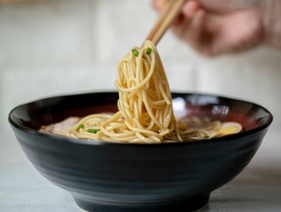

My Authentically Italian Pasta Recipe

Description
Get a taste of authentically Italian pasta! With rich sauce that's extremely easy to make, this
will make a weekday dinner that much better.
Ingredients
- Canned peeled, whole tomatoes
- Parmesano Reggiano cheese
- Pasta of your choice
- Olive oil
- Garlic
- Half a large yellow onion/medium sized yellow onion
Cooking Instructions
- Blend a can of whole tomatoes
- Thinly slice 3-4 cloves of garlic
- Thinly dice half of a large yellow onion, or a whole medium sized yellow onion
- Coat the bottom of a pan with olive oil
- Heat pan on medium-high heat
- Put in onions and sautee until translucent
- Put in garlic and sautee for 30-45 seconds
- Pour in blended tomatoes
- Boil pasta until your preferred doneness
- Drain pasta and serve with sauce and grated parm.